AI redrew the lamp in a slightly different shape in every version. Your customers notice. Here the product is pasted in from real photos, never generated.
AI brand story ad · Breakdown
AI made ads cheaper.
It shouldn’t make
them worse.
A lamp is not hard to make. What people pay for is the feeling. For a small US lighting studio, I turned their brand story into a 47-second film: from a cave fire 40,000 years ago to a living room today. Here is every decision behind it, and why.
The lamp shown is a stand-in design
4eras in one story
5versions before final
9steps, all below
0times AI redrew the product
The story in one line
More light.
Less together.
For thousands of years people gathered around a flame. Today our rooms are bright, but everyone looks at their own phone. A lamp turns on, the phones go down, and people come back together.
We didn’t sell the light. We sold what the light does.
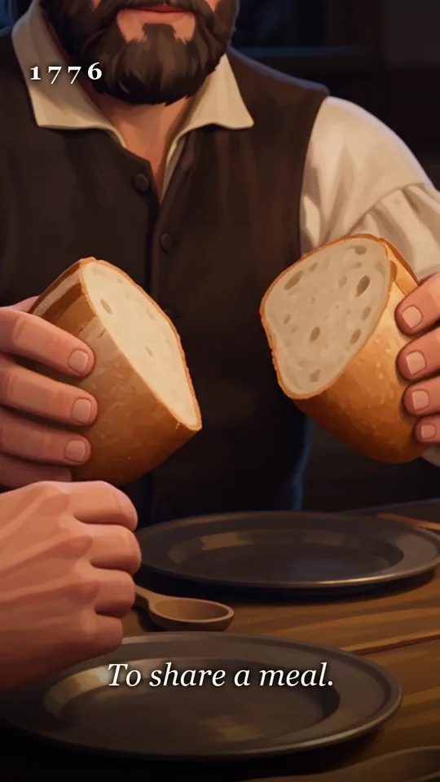
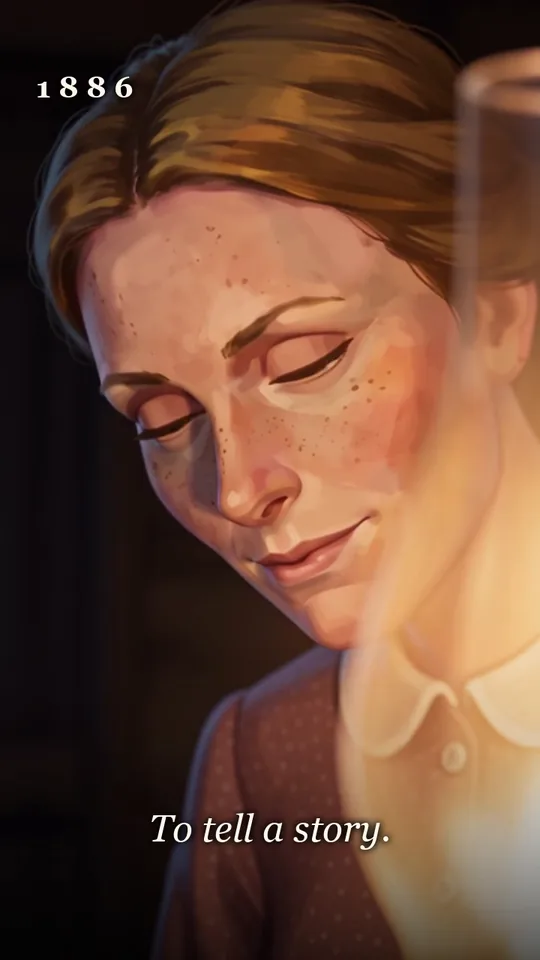
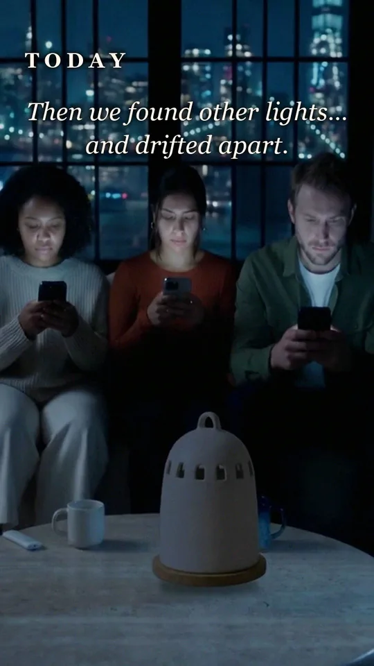
Why not just do it yourself?
The tools are easy.
Getting it right isn’t.
Any business owner can type a prompt today. The first draft of this ad looked fine too. These are the things it got wrong, and most people would have posted it anyway.
Realistic people from the past looked fake, so the past became a painted world and only today is real. That choice is a story decision, not a setting.
Joining AI clips “seamlessly” makes the picture jump. It took a cut-by-cut check to make the film flow.
A lamp in a nice room is not an ad. Reading the brand and adding a problem (everyone on their phone) is what gives the lamp a reason to appear.
It took five versions. You run the business; this is what I do every day.
The decisions
Story first.
Then the product, exact.
Part 1 · The story
-
Read the brand, not the product
A lamp is not hard to make. Many studios can print one. So the question was never “how do we show the lamp?” It was “what does this brand believe, and how should owning it feel?”
I read their website and Instagram first. Two founders, small batches. Their product page already told a story about people gathering around fire. Their Instagram had plenty of phone videos, but no brand film. So the ad would not be “a lamp in a nice room”. It would be their own story: warm, slow, together.
Why: most premium products do not win on function. They win on story, on feeling, and on how owning them makes you different. The brand has usually written that story already. It is on their own pages.
-
Give the story a problem
The first outline was just “fire becomes a lamp”. Pretty, but nothing happens. So I added a problem: in the modern living room the light is bright, but three friends sit apart, faces lit blue by their phones. Then the lamp turns on. Phones go down. They lean in and laugh.
The problem 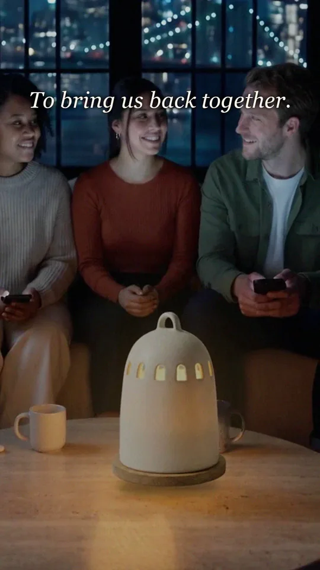
The turn Why: a brand ad needs conflict too. Show what is missing first, and the product has a reason to appear. The lamp’s warm glow answers every fire before it.
-
The past is painted, the present is real
Realistic cavemen and colonial families looked like wax dummies. So the past became a hand-painted 3D look, and only today is photo-real. I tested two looks first: flat 2D illustration felt like a children’s book and lost the costume details. Hand-painted 3D kept them.
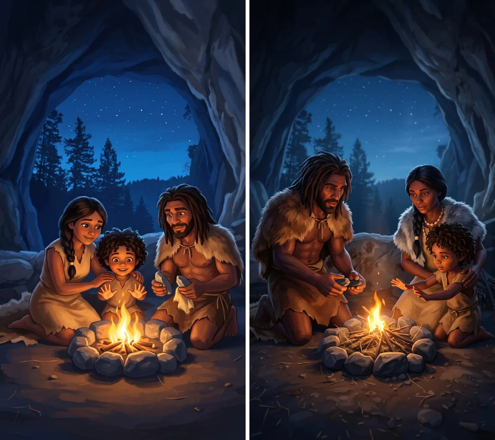
Style test. Left: 2D illustration. Right: hand-painted 3D (chosen). To get from painted to real, the oil lamp goes out, a drop of ink spreads and washes the painted world away, and the real living room appears.
The ink transition, 8 seconds. Why: the change of style is itself the move from past to present. The viewer feels the jump in time without being told.
-
Cut like an ad, not a short film
My first prompts had two shots per scene. It felt slow, like a short film. I rewrote them so each shot lasts 1–2 seconds: close-up, macro, medium, wide, switching sides. Every shot does one thing and I wrote down how it ends. The first shot of each era is a flame in the centre of the frame, so in the edit one flame can cut straight to the next.
Music: warm at the start, cold and quiet in the phone scene, rising when the lamp turns on. Then a short voiceover, years on screen (40,000 BC, 1776, 1886, TODAY) and large captions, placed so they never cover the product.
Why: an ad feels like an ad because shots are short, shot sizes jump, and each shot does one job.
Part 2 · The product, kept exact
A story only works if the product in it is the one you sell. This is the part a do-it-yourself ad usually skips.
-
Lock the product before anything else
From the product photos I made a clean reference of the lamp from each angle, switched off and switched on. I checked every one against the real product. One angle came out the wrong shape, so I threw it away. Only the checked images were used in the film.
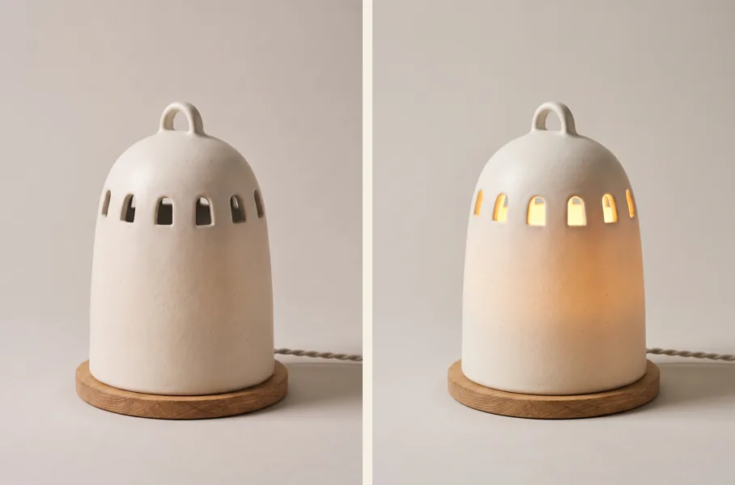
The product reference for this version: off and on, checked so the shape is identical. Why: if the product is a little wrong, the whole ad is useless to the client. Fix the product first, then tell the story.
-
Build the cast and the sets separately
The three modern friends each got a full sheet: front, back and side, plus three face angles. The families from the past appear in one shot each, so one group sheet per family was enough. The four locations were made as empty rooms, with no people in them. When I made a shot, I added the people and the room together.
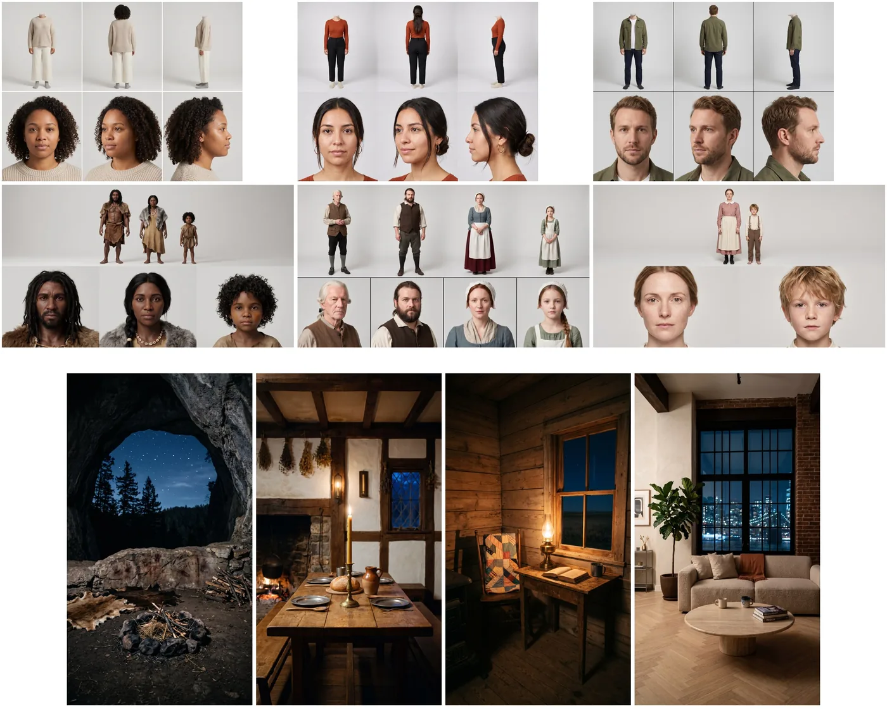
Leads get full sheets, extras get a group sheet, places are empty sets. One mistake I caught: a father in the candlelight family looked like a well-known actor. I replaced only him. An ad that goes public cannot have a face that looks like a real person.
Why: when people, places and the product are separate, each shot stays consistent. Mix them into one prompt and faces and rooms drift.
-
Paste the real product in. Do not let AI draw it
In one version the top of the lamp turned into a big open hole. The references were right. The problem was the first frame the video started from: one wrong word in the prompt, and the model drew exactly that. Every later version copied the mistake.
The fix takes AI out of the product completely:
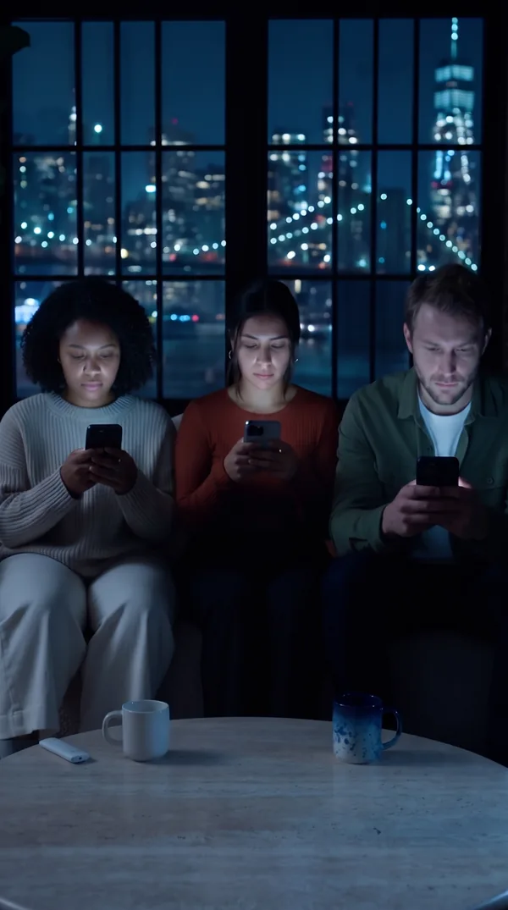
1 · AI removes the lamp: empty plate 2 · Real lamp, cut out 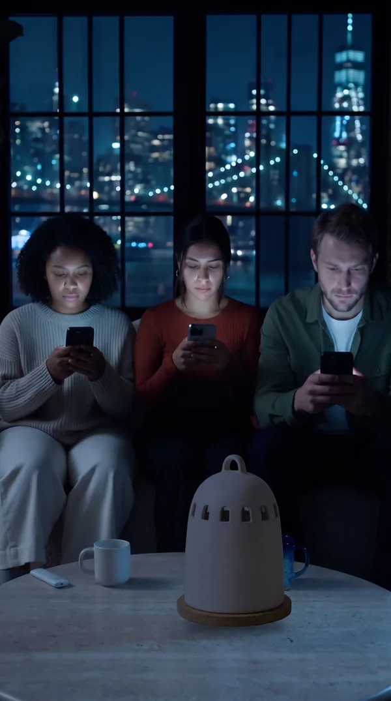
3 · First frame, shape is 100% real I made one frame with the lamp off and one with it on. The video only moves between those two correct pictures, so the shape cannot drift.
Lamp off → lamp on, locked at both ends. Last, a check sheet: every frame where the lamp appears, side by side, compared with real customer photos.
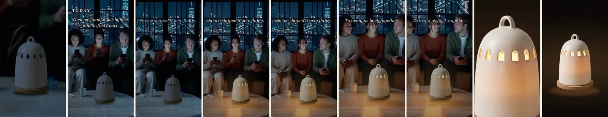
Every appearance of the lamp, checked against the product photos. Why: what the client cares about most is whether the product is right. Product first frames are pasted, not generated. Check the first frame before you make any video.
-
Join shots with a cut, not a “seamless” blend
In version 4 I used the last frame of one clip as the first frame of the next, hoping for a seamless join. But AI redraws that frame with a tiny shift in position and colour, so the film jumped at every join.
The rule now: when a clip ends, the next one is a new shot, a different size or angle. A cut between two different shots just looks like normal editing. I also made sure the same picture never sits on both sides of a cut.
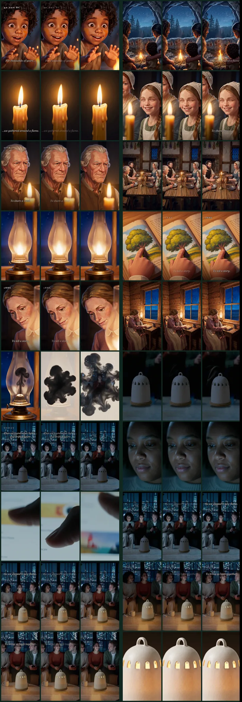
Cut check for the final version: three frames on each side of every join. Why: in AI video, continuity comes from editing, not from forcing frames to match.
-
Review it like the client would
Each version was watched as if I were the lamp maker, not the editor. Every note became a fix:
Version What was wrong What I changed v1 → v2 Slow, felt like a short film 1–2 second shots, music, captions v2 → v3 Eras felt disconnected; lamp shape off; people looked fake Old light turns into new light between eras, years on screen, voiceover, ink transition, softer skin and grain v3 → v4 Top of the lamp drawn wrong Lamp pasted in from the real product, check sheet v4 → v5 Small jumps at four joins; product shot too fast New shot at every cut, slower 6-second product ending Why: the client does not judge the AI. They judge their product, their story and whether it looks real. Fix what they would see, in that order.
For small home and lighting brands
You run the business.
I’ll make the film.
- Story from your brand. I start from your website and your words, not a template.
- Your real product, kept exact. Product shots are pasted from your photos and checked frame by frame.
- Made for Reels and TikTok. 9:16, captions, music and voiceover included.
- No shoot, no studio. Send product photos and a link. Everything is done by email.
Want one?
Tell me about
your product.
Send a link to your shop and one line about your brand. I reply by email within 1 business day.